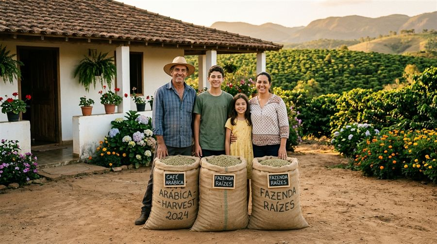
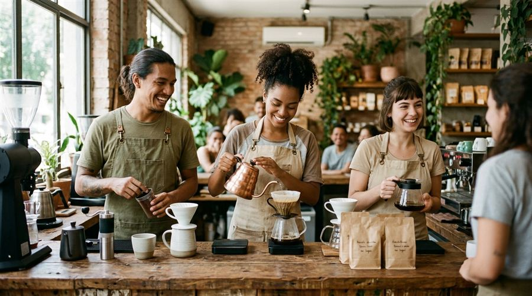
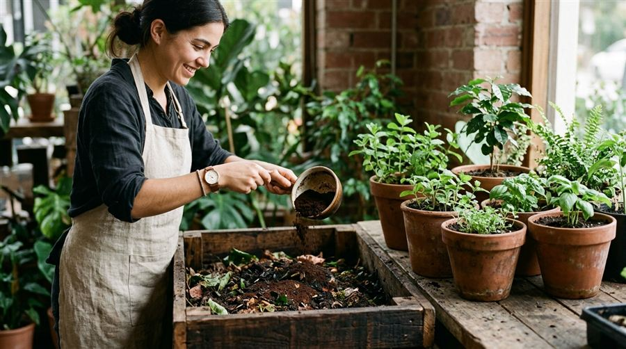
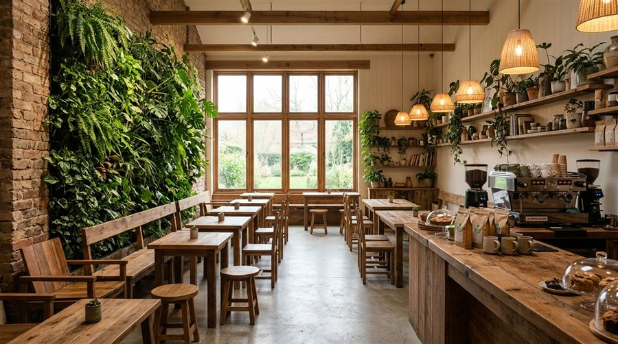
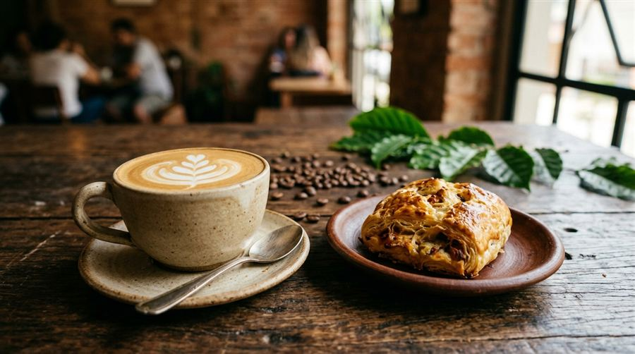

OBRA 01 • SALA CAMPO & FAMÍLIA
Colheita ao Amanhecer
Agricultores locais selecionam manualmente os frutos maduros no ponto ideal de doçura natural.
Uma mostra fotográfica documental dedicada às mãos que cultivam, distribuem e preparam o café sustentável no nosso bairro. Explore as salas abaixo e use o botão “Ampliar obra” de cada ficha para ver os detalhes.
Navegue pelas salas temáticas para conhecer cada etapa da nossa história.
Exibindo as 8 obras da exposição.
Agricultores locais selecionam manualmente os frutos maduros no ponto ideal de doçura natural.

Família produtora diante da safra colhida em frente ao seu lar no campo, símbolo de dignidade e agricultura familiar.
Entrega direta da safra ao distribuidor parceiro, fortalecendo a economia regional com transparência.

Nossa equipe formada por moradores do próprio bairro transforma grãos selecionados em experiências acolhedoras.

A borra extraída após cada preparo retorna à terra como adubo orgânico para o jardim da cafeteria.
Vizinhos e visitantes reunidos saboreando cafés especiais e salgados assados na hora em um ambiente vivo.

Luz natural, madeira de reflorestamento e paredes vivas criam um refúgio sustentável no meio da cidade.

Cerâmicas feitas por artesãos locais valorizam o sabor do café coado e dos salgados preparados diariamente.
Visite a Aroma de Café, conheça nosso espaço pessoalmente e experimente os sabores retratados nas obras.